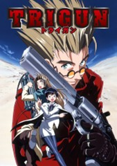
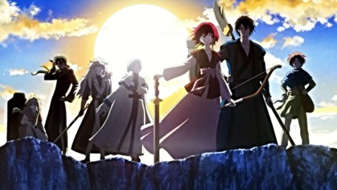

About “What is this?”:
This is my page focused solely on my anime recommendations! Literally speaking, the term “anime” refers to any work of animation. Though in the lingo of American watchers, it specifically refers to any work of animation within Japan. Anime are usually, though not always, adaptations of Japanese comics called “manga.”
Frieren: Beyond Journey’s End (2023):
Currently airing with two seasons, this anime is the current gold-standard for how great anime can be. This series is about the titular immortal elf Frieren, a former member of “The Hero’s Party,” who had vanquished the Demon King and his army 80 years prior to the events of the story. After the death of the beloved hero Himmel, Frieren sets on a journey to the land of the dead along with the current disciples of her former party-members. Both dubbed and subtitled in English, this series is a slow-burn, cozy fantasy anime about living in the moment and appreciating the small things in life. Coupled with good writing and excellent animation, Frieren: Beyond Journey’s End is a great place to start watching anime. This anime is adapted from a manga of the same name, which has been in hiatus since October 2025.
Genre: fantasy, magic, adventure, slice-of-life, drama, slow-pace
Trigun (1998):

A completed full season consisting of 26 episodes, Trigun ‘98 follows Vash the Stampede. Explore the travels of a pacifist gunman wandering the dog-eat-dog planet of No Man’s Land, also called Gunsmoke depending of what version is being watched. Both dubbed and subtitled for English fans, this series starts off as an episodic space-western sci-fi, and evolves into high-stakes drama as the series goes on. This anime is adapted from a manga of the same name, albeit very loosely. There are other iterations of this work, all exploring different story-lines concerning the protagonist Vash the Stampede. If old-school isn’t your style, there’s also the on-going reboots of Trigun Stampede (2023) & its sequel series Trigun Stargaze (2026).
Genre: space-western, sci-fi, action, comedy, post-apocalypse, drama
Yona of the Dawn (2014):
Airing in 2014, Yona of the Dawn begins as a cheesy period romance about a spoiled rich girl. Do not be fooled by this initial front, however, as it quickly reveals itself to be a emotional tale of political intrigue, as the sheltered princess Yona and her guard Hak must flee the castle after a coup & attempt on her life. Now, she must reinvent herself from a whiny, sheltered princess into the courageous leader of an ensemble of prophetic warriors & revolutionaries. This anime is very faithfully adapted from a manga of the same name, and is recommended for fans of emotional story-telling coupled with excellently-paced action.
Genre: coming-of-age, action, adventure, romance, historical drama, politics
